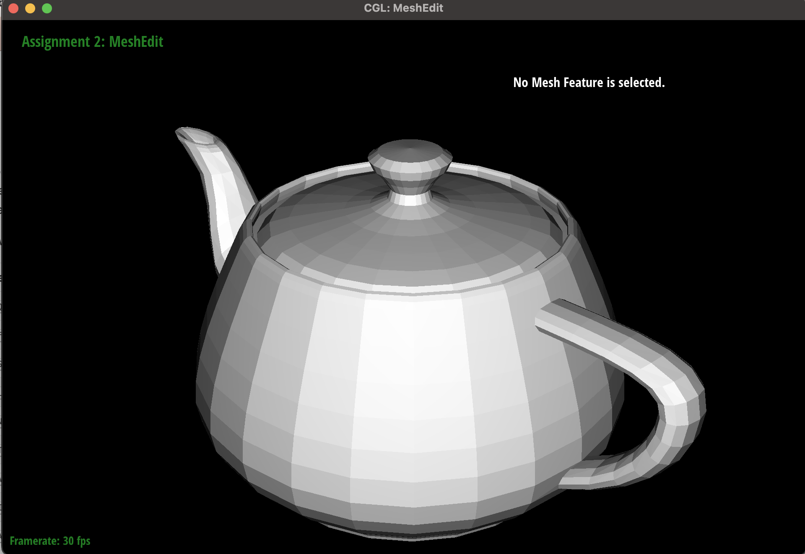
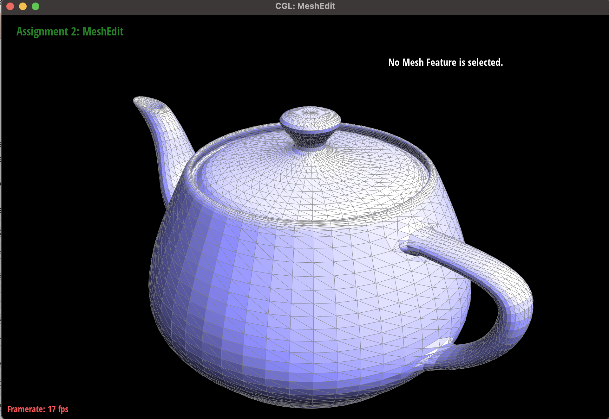

Overview
While the last assignment showed how you can work with individual triangles, in this assignment, we learned how many triangles can come together to build up complex 3D creations from a simple cube to Max Planck. We found it interesting how you can cascade splits and flips across an entire mesh to increase its resolution and make it more smooth. In the beginning, we also learned how Bezier curves and surfaces work by manually creating them. It was interesting seeing how our implementation of de Casteljau's broke down the segments between points into fewer and fewer segments until it collapsed into a singular point, which was on the Bezier curve of the resulting spline. In addition, the algorithm for reducing Bezier surfaces into separate Bezier curves was similar to pixel-sampling in the previous assignment, which was interesting to see. All in all, we were able to apply ideas from lecture and turn points into surfaces and surfaces into more complicated yet intricate 3D models.
Section I: Bezier Curves and Surfaces
Part 1: Bezier Curves with 1D de Casteljau Subdivision
Briefly explain de Casteljau's algorithm and how you implemented it in order to evaluate Bezier curves.De Casteljau's algorithm takes a set of control points and a interpolation value 0 > t < 1 in order to generate a point on the Bezier curve of the control points. It iteratively takes the n-1 segments between the n points and plots n-1 points that partition each segment by the ratio specified by t. To implement it, we repetitively called a function that took in n points and t, and then each iteration outputted n-1 points. We finally returned the only point left.
Take a look at the provided .bzc files and create your own Bezier curve with 6 control points of your choosing. Use this Bezier curve for your screenshots below.
The 6 points used are as follows: (0.200, 0.350) (0.100, 0.500) (0.240, 0.750) (0.400, 0.800) (0.600, .500) (.500, 0.400)
Show screenshots of each step / level of the evaluation from the original control points down to the final evaluated point. Press E to step through. Toggle C to show the completed Bezier curve as well.

|
|
|
|
|
|
|
Show a screenshot of a slightly different Bezier curve by moving the original control points around and modifying the parameter \(t\) via mouse scrolling.
Part 2: Bezier Surfaces with Separable 1D de Casteljau
Briefly explain how de Casteljau algorithm extends to Bezier surfaces and how you implemented it in order to evaluate Bezier surfaces.de Casteljau's algorithm can be applied to surfaces by taking a u & v interpolation parameter and 2d points and running de Casteljau's on one axis of the points and setting t = u. Then, each curve along the axis is reduced to a point, and you run de Casteljau's again on this moving curve, treating it as its own Bezier curve, setting t = v. At the end, you will have reduced the 2D surface into a single point through a 2D de Casteljau's.
Section II: Triangle Meshes and Half-Edge Data Structure
Part 3: Area-Weighted Vertex Normals
Briefly explain how you implemented the area-weighted vertex normals.To implement area-weighted vertex normals, we started with a 3D sum vector = (0,0,0). We iterated around a vertex's halfedges to get to each adjacent face/triangle. For each triangle, we used the next() pointer to reach its vetices, saving all three. Then, we took the vector form of two of edges by computing v3-v1 and v2-v1. We took the cross-product of these two edges, which gave us the normal vector for that surface with a magnitude indicating twice its area. Then, we added each cross product to the sum vector and normalized.
Show screenshots of dae/teapot.dae (not .bez) comparing teapot shading with and without vertex normals. Use Q to toggle default flat shading and Phong shading.
Part 4: Edge Flip
Briefly explain how you implemented the edge flip operation and describe any interesting implementation / debugging tricks you have used.The edge flipping operation was done through a series of pointer reassignments. Using the passed in edge, we created an initial mapping of edges, vertices, faces, and halfedges for the initial layout of the two triangles. After updating each of the vertices, edges, and faces to the corresponding halfedges and setting the new neighbors of each of the halfedges, we were able to adjust the triangles so they were flipped.
Show screenshots of the teapot before and after some edge flips.
Part 5: Edge Split
Briefly explain how you implemented the edge split operation and describe any interesting implementation / debugging tricks you have used.Similar to Part 4, the edge splitting operation was done through a series of pointer reassignments. Using the passed in edge, we created an initial mapping of edges, vertices, faces, and halfedges for the initial layout of the two triangles. For splitting specifically, we had to add new faces, edges, and halfedges with the addition of a new vertex in the middle. After adjusting the existing triangle properties so that they would map to the new properties correctly, we set the position for the new vertex to the midpoint of two of the opposite vertices. This allowed us to split the two triangles effectively with one new vertex in the middle.
Show screenshots of a mesh before and after some edge splits.
Show screenshots of a mesh before and after a combination of both edge splits and edge flips.
If you have implemented support for boundary edges, show screenshots of your implementation properly handling split operations on boundary edges.
n/a
Part 6: Loop Subdivision for Mesh Upsampling
Briefly explain how you implemented the loop subdivision and describe any interesting implementation / debugging tricks you have used.To do loop subdivision, instead of splitting & flipping first, we first calculated what the new position would be for all of the old vertices and unmarked the "new" value on all of these vertices. Then, we iterated through all of the edges, since the new vertices would be on the midpoint of these old edges. Then, we calculated what the new position of these vertices would be by calculating the weighted average of its neighbors, with a higher weight for the vertices on the ends of the edge. Then, we iterated through all of the edges, splitting them and implicitly marking them as new, and checking for this flag before splitting the rest of the edges. Then, after all the edges are split, we flip the new edges that connect new and old vertices. At the end, we want to make sure our the vertices in our next level of upsampling are in the right position, so we update their positions to the positions calculated in the beginning.
Take some notes, as well as some screenshots, of your observations on how meshes behave after loop subdivision. What happens to sharp corners and edges? Can you reduce this effect by pre-splitting some edges?
After loop subdivision, each of the shapes become much smoother. Sharp corners and edges round and smooth out, making a much more curvy surface. Although the mesh becomes a higher resolution, these sharp features become less distinct and more blurred into its surroundings due to the averaging of neighboring vertices. To preserve this detail, you can make more splits over these sharp features, increasing the number of vertices representing it, thus preserving it across multiple loop subdivisions.
|
|

|
|

|
|
|
|
|
The original meshes were only on the edges of the cube and from corner to corner on each face. The lack of symmetry on each face can lead to a lack of symmetry when subdividing the mesh. When we do our flip after splitting the diagonal mesh, the flip makes all of the meshes face the same direction as the initial diagonal mesh. As a result, we decided to make our original meshes symmetric across each face by splitting all the diagonals first and then the edges of the cube. This created an asterisk-like mesh on each mesh. Then, flipping each diagonal edge from the center of the face to the corner created a diamond shape that maintained symmetry upon loop subdivision.
|
|
|
|
|
|
If you have implemented any extra credit extensions, explain what you did and document how they work with screenshots.
n/a